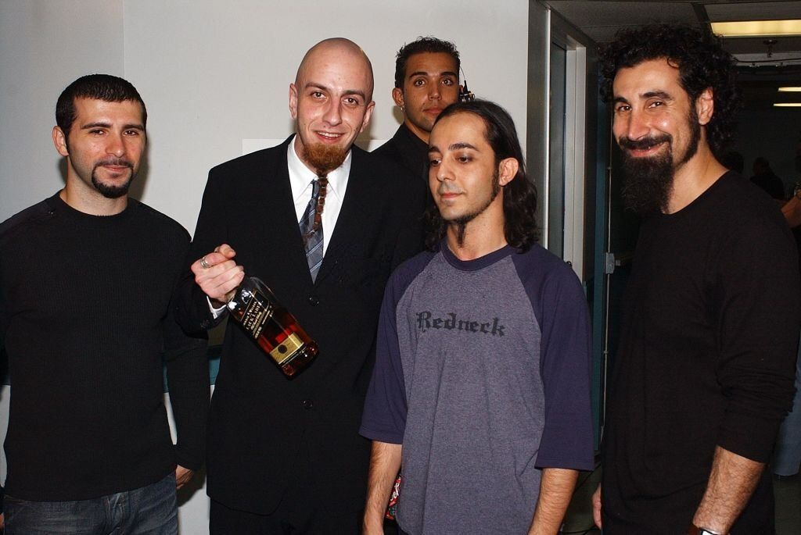

System of a Down
Da Cálifornia para o mundo

O Inicio de System of a down
Serj Tankian e Daron Malakian frequentaram a Escola Armênia Rose e Alex Pilibos quando crianças. No entanto, devido à diferença de oito anos de idade entre eles, eles só se conheceram em 1992 enquanto trabalhavam em projetos separados no mesmo estúdio de gravação. Eles formaram uma banda chamada Soil, com Tankian nos vocais e teclados, Malakian nos vocais e guitarra, Dave Hakopyan (que mais tarde tocou no The Apex Theory/Mt. Helium) no baixo e Domingo "Dingo" Laranio na bateria. A banda contratou Shavo Odadjian (outro ex-aluno da Rose e Alex Pilibos) como empresário, embora ele acabasse se juntando ao Soil como segundo guitarrista. Em 1994, após apenas um show ao vivo e uma sessão de improvisação, Hakopyan e Laranio deixaram a banda. Em meados de 1997, o baterista Khachaturian deixou a banda devido a uma lesão na mão (ele posteriormente co-fundou The Apex Theory, que incluía o ex-baixista do Soil, Dave Hakopyan). Khachaturian foi substituído por John Dolmayan.
Em junho de 1998, o System of a Down lançou seu álbum de estreia, intitulado "System of a Down". Eles desfrutaram de um sucesso moderado, pois seus primeiros singles "Sugar" e "Spiders" se tornaram amplamente reproduzidos nas rádios, e os videoclipes de ambas as músicas eram frequentemente exibidos na MTV. Após o lançamento do álbum, a banda fez extensivas turnês, abrindo shows para o Slayer na turnê Diabolus in Musica, tocando com a banda Clutch, antes de seguir para o segundo palco do Ozzfest. Após o Ozzfest, eles excursionaram com Fear Factory e Incubus antes de liderar a Sno-Core Tour com o suporte de Puya, Mr. Bungle, The Cat e Incubus.
A banda alcançou sucesso comercial com o lançamento de cinco álbuns de estúdio, três dos quais estrearam em primeiro lugar na Billboard 200 dos EUA . O System of a Down foi indicado a quatro prêmios Grammy , e sua música " BYOB " ganhou um Grammy de Melhor Performance de Hard Rock em 2006. Conhecidos por suas letras politicamente carregadas, muitas de suas músicas abordam questões sociais e políticas, como a mensagem anti-guerra em "BYOB" e as críticas ao complexo industrial prisional e à Guerra às Drogas em "Prison Song". A banda entrou em hiato em 2006 e se reuniu em 2010. Além de duas novas músicas em 2020 (" Protect the Land " e " Genocidal Humanoidz "), o System of a Down não lançou nenhum material novo desde os álbuns Mezmerize e Hypnotize em 2005. A banda vendeu mais de 12 milhões de discos em todo o mundo, enquanto dois de seus singles, " Airplanes " e " Hypnotize ", alcançaram o primeiro lugar na parada Alternative Songs da Billboard .
"A civilização é uma falha. Nós precisamos pensar no que podemos fazer juntos com amor e paz"
Serj Tankian
Curiosidades da banda
- Uma das curiosidades mais clássicas de toda a banda é sobre a origem do seu nome. No caso de System of a Down, a inspiração veio de um poema escrito pelo guitarrista Daron Malakian, intitulado Victims of a Down.
- Toda a banda é formada por integrantes de origem armênia, sejam imigrantes ou filhos e netos de pessoas que emigraram do país asiático para os Estados Unidos.
- A banda System of a Down já foi prestigiada no Grammy, o prêmio mais importante da música. O grupo conquistou o reconhecimento na categoria Melhor Performance de Hard Rock em 2006, pouco antes do seu hiato.
- O vocalista do System of a Down, Serj Tankian, tem uma organização sem fins lucrativos ao lado de Tom Morello, da banda Rage Against the Machine, também envolvida em questões políticas.
"Why don't presidents fight the war?
Why do they always send the poor?"
System of a Down - B.Y.O.B

mais informações:
Você pode conhecer mais sobre a banda em clicando aqui